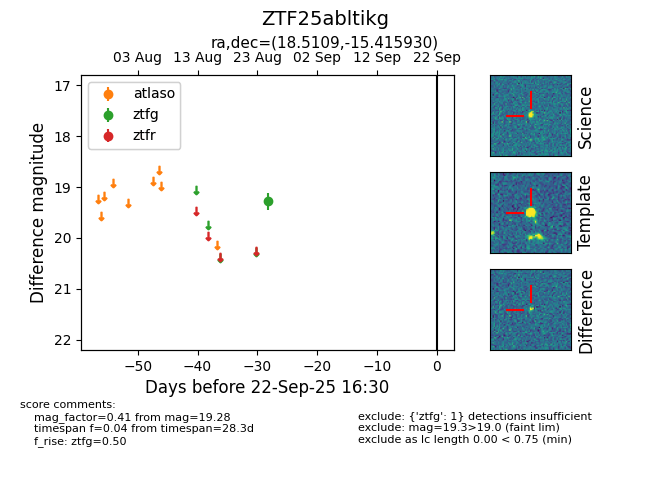

FINK: ZTF25abltikg
Lasair: ZTF25abltikg
ALeRCE: ZTF25abltikg
ZTF25abltikg (ztf,fink)
equatorial (ra, dec) = (18.5109,-15.41593)
galactic (l, b) = (148.2289,-77.16373)

last ztfg=19.28
1 ztfg detections